1. Nadia Comaneci


Nadia Comaneci made history at the 1976 Summer Olympics in Montreal. Not only is she one of the most famous Romanians but she is among the best-known gymnasts in the world. She was the first gymnast ever to be awarded a perfect score of 10 points for her performance on the asymmetric bars, thus becoming one of the best-known gymnasts in the world. This incredible feat marked the start of an extraordinary career for the Romanian athlete, who went on to win nine Olympic medals: five Olympic gold medals, three silver, and one bronze. She also won four World Championships. In 2004, she was included in the International Gymnastics Hall of Fame and has even been featured on a Romanian postage stamp. In 2012, she lit the Olympic Flame at the London Olympic Games. Today, Nadia Comaneci is still actively involved in gymnastics, coaching and mentoring young athletes in her special facility in the United States. You can visit the monument for the Romanian Women's Gymnastics Team at the 1976 Montreal Olympics in her hometown of Onești in Bacău county. Behind it is the training facility built during communist Romania in a time of great austerity.
2. Vlad Dracula, who Inspired Bram Stoker & Count Dracula
Undoubtedly, one of the most famous people from Romania is Vlad Dracula (aka Vlad the Impaler or Vlad III), a 15th-century ruler of Wallachia. Vlad Dracula was a courageous and tenacious leader. During his rule, he fought off Ottoman Turks who invaded parts of Wallachia (Southern Romania). He's best known for his cruelty and ruthlessness in punishing thieves, traitors and enemies through his favorite practice: impaling them and leaving them for a slow, exemplary death. This earned him the name Vlad the Impaler and a legendary status among Romanians who see him as a national hero even today. 400 years later, his reputation inspired Bram Stoker to write his famous novel Dracula, which takes place in Transylvania. His story became very popular especially in the United States, and inspired many other writers, artists, video games and horror films – even though much of it has nothing to do with historical reality. Bela Lugosi, who played Count Dracula in the 1931 movie, made a great role but has little to do with the “original” Vlad the Impaler. The same can be said about the 1992 Dracula movie That’s why so many tourists visiting Romania look for Bran Castle tours believed to be the home of Vlad Dracula and Romania’s #1 tourist attraction. Visiting Bran Castle is one of the most popular things to do in Brasov because tourists want to find out more about Vlad Dracula and if there’s any truth to all the stories and legends about him. Just know there are many other famous Romanian castles worth visiting!
3. The Infamous Communist Leader Nicolae Ceausescu
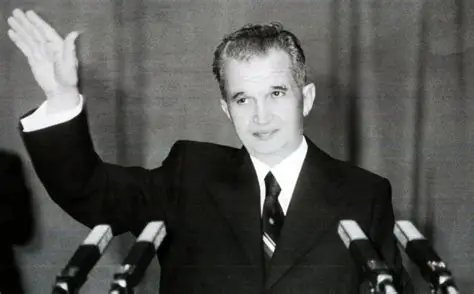Nicolae Ceaușescu, one of Romania's most infamous figures, left a lasting legacy still felt today. Rising from the Communist youth movement, he became General Secretary of the Romanian Communist Party and President in 1974. Under his rule, communist Romania had a significant boost in industrial and agricultural production, and major infrastructure projects were developed. But after visiting North Korea, Ceaușescu became obsessed with a personality cult and grandiose, often unfeasible projects, like the Palace of Parliament, one of the most famous buildings in Romania which has a damned reputation even today. To fund these ventures, the communist regime restricted freedoms, imposed harsh censorship, limited food supplies, and prioritized exports over imports. While Ceaușescu and the Communist elite lived in luxury, ordinary Romanians suffered from hunger, humiliation, and fear. Even the regime’s relationship with the Romanian Orthodox Church was complex: despite being officially "atheist," Ceaușescu used the Church to promote national identity. This is the context in which the Romanian revolution started in December 1989 in the larger context of USSR's disintegration (Romania was NOT part of the Soviet Union!). But the power structures of communist Romania were not ready to let go of control, so violent clashes ensued with shootings, victims and deaths all over the country. On 25 December 1989, as the anti-communist Romanian revolution was in full swing, he was found guilty of genocide against the people of Romania by an impromptu tribunal set up in a military garrison in Targoviste and swiftly executed in the courtyard for his crimes, along with his wife, Elena Ceausescu.
4. The Abstract Sculptor: Constantin Brâncuși
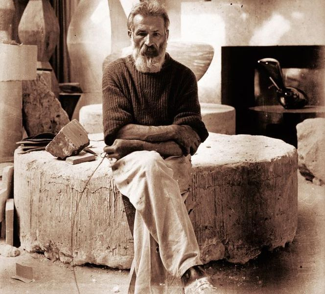 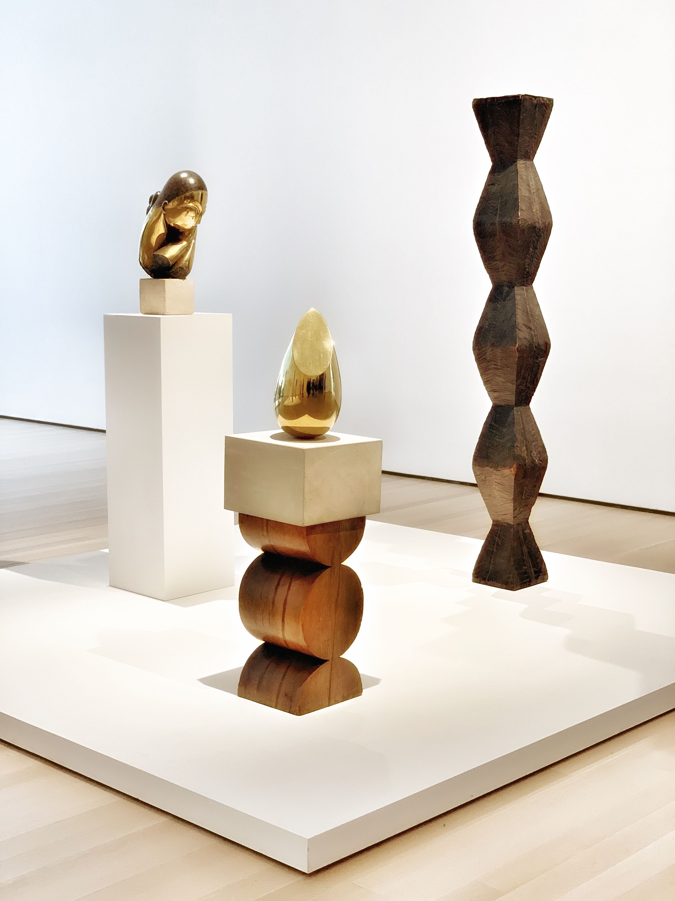 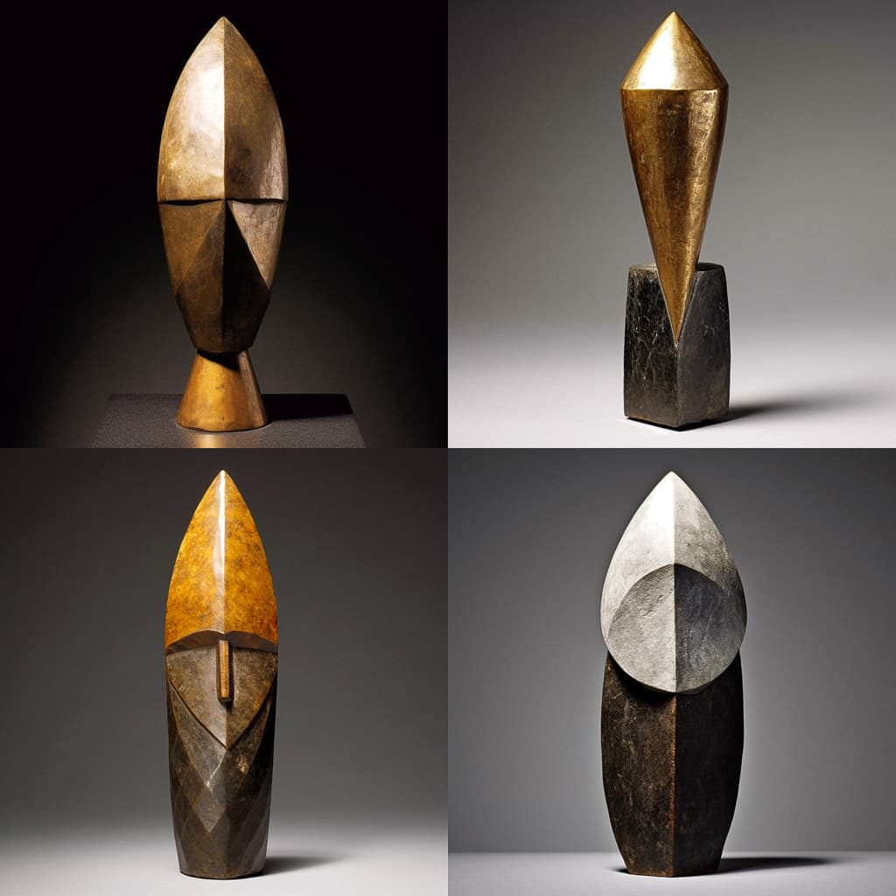Constantin Brâncuși, Romania's most celebrated sculptor and a pioneer of modernism, was born in 1876 in a small Southern Romanian village. A free and creative spirit, he studied art in Bucharest before embarking on a journey to Paris on foot in 1904 after a dispute over unpaid commissions. In 1905, he was admitted to Paris’s top artistic institution and offered work with Auguste Rodin, the founder of modern sculpture. However, he declined, determined to forge his own artistic path—an unusual, if not radical, decision at the time. Brâncuși’s work became iconic for its abstract forms and simplicity, earning him acclaim across Europe. His distinctive style secured his place in modern cultural heritage. His most famous piece, The Infinity Column (Coloana Infinitului), a tribute to Romania’s fallen soldiers of World War I, remains a national symbol. Installed in 1938 in Târgu Jiu, it stands today alongside his other masterpieces.
5. The Romanian Tennis Player Simona Halep
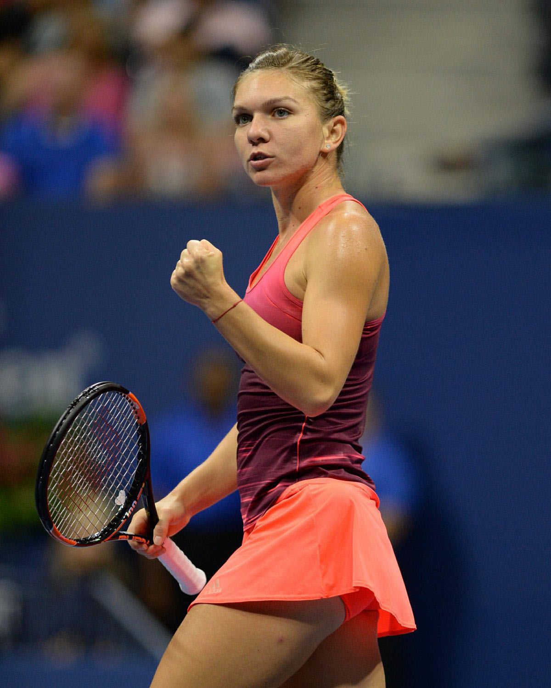 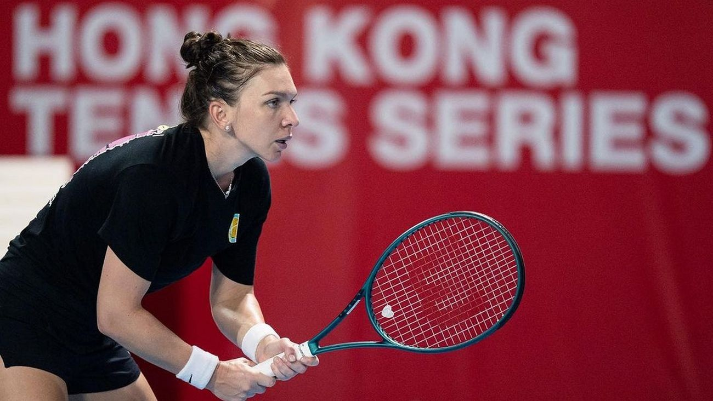Simona Halep is one of the most famous sportspeople in Romania and has made a name for herself as one of the best Romanian professional tennis players among women. Halep's career started at an early age when she was four in her hometown of Constanta, and since then, she has won 19 singles titles and three doubles championships. Halep became the first Romanian woman to win a Grand Slam title when she won the 2018 French Open. Earlier that year, she also achieved a career-best ranking of world number one after reaching the semifinals at Wimbledon. She won the 2019 Wimbledon championship after beating Serena Williams - her biggest career achievement. She also received numerous honours at home, including having two stadiums named after her, becoming an honorary citizen of Bucharest and inspiring a whole generation with her sports performances and mindset. Halep is not just an incredible athlete: she also used her fame to support social causes such as raising awareness about bullying during her visits to schools and universities. Simona Halep was, for a long time, the second-highest ranked Romanian player in WTA, but due to several injuries and, more recently, a doping scandal, she lost her ranking.
6. Ilie Năstase – Another Famous Tennis Player
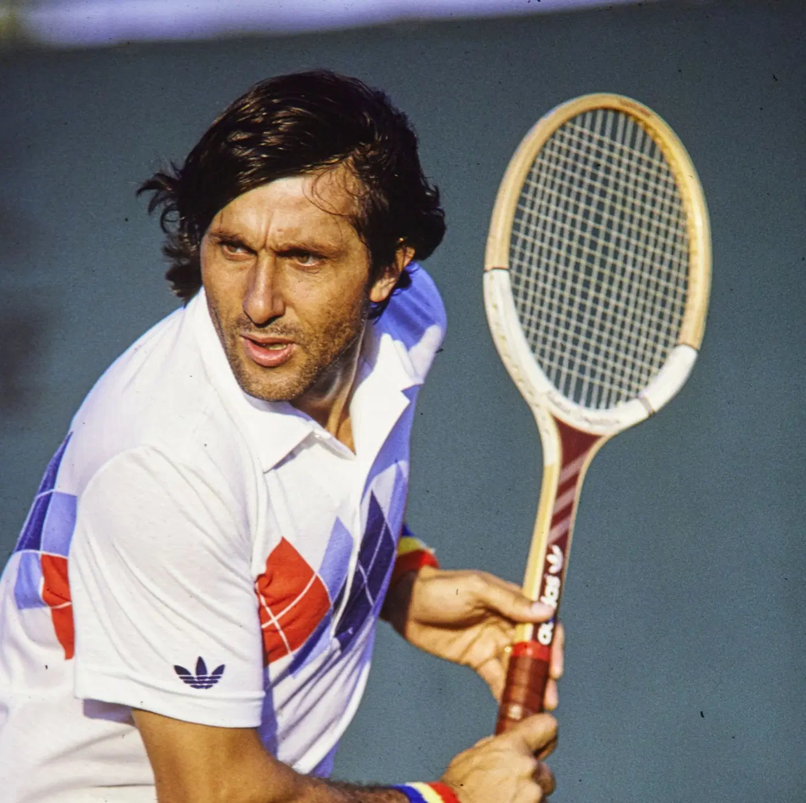 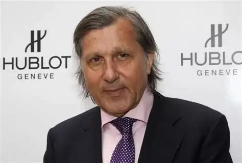The famous Romanian tennis player Ilie Năstase was the first Romanian ranked No. 1 in the world by the Association of Tennis Professionals (ATP) in 1972 and 1973. He also reached the finals of both Wimbledon and the US Open twice, making him the first Romanian professional tennis player to be recognized internationally. Năstase won seven doubles titles and was a runner-up for two Grand Slam titles. Along with Simona Halep, Năstase remains even today an example for young Romanians of what talented people who work hard can achieve.
7. Gheorghe Hagi, the Famous Romanian Football Player
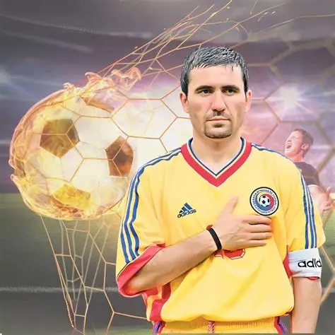 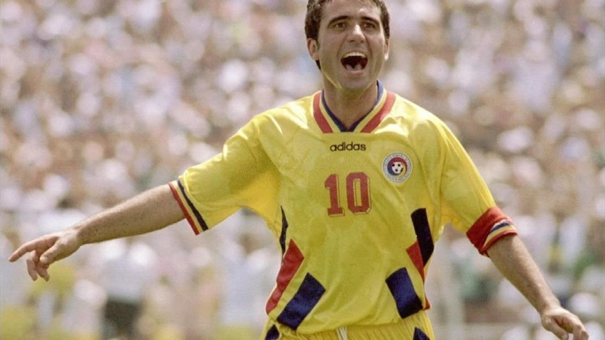We stay in the world of sports for another beloved figure among Romanian celebrities: Gheorghe Hagi. And in case you were wondering, football is king in Romania :) Once nicknamed the Maradona of the Carpathians Gheorghe Hagi had an international career that spanned over two decades, from 1983 to 2004. During his career, he played for famous European football clubs, including Real Madrid, FC Barcelona, and Galatasaray. He scored 159 goals in all competitions, even though he was a midfielder. With a total of 124 appearances for the Romanian National Team as captain, the people of Romania placed all their hopes on him during challenging games. As a soccer player, Gheorghe Hagi was best known for leading Romania to a magical run in the 1994 World Cup in the United States. He was also the captain of FC Galatasaray of Turkey when they won their only Champions League title in 2000 against Arsenal. Hagi is now a successful coach in Romania at FC Farul Constanta, who won the title in 2023 and is heavily invested in preparing future generations of Romanian football players, having set up his own academy in the city of Constanta. So if you're interested in football, you could find out more about his work during your holiday in Romania's Black Sea resorts!
8.Traian Vuia, Pioneer of Modern Aviation
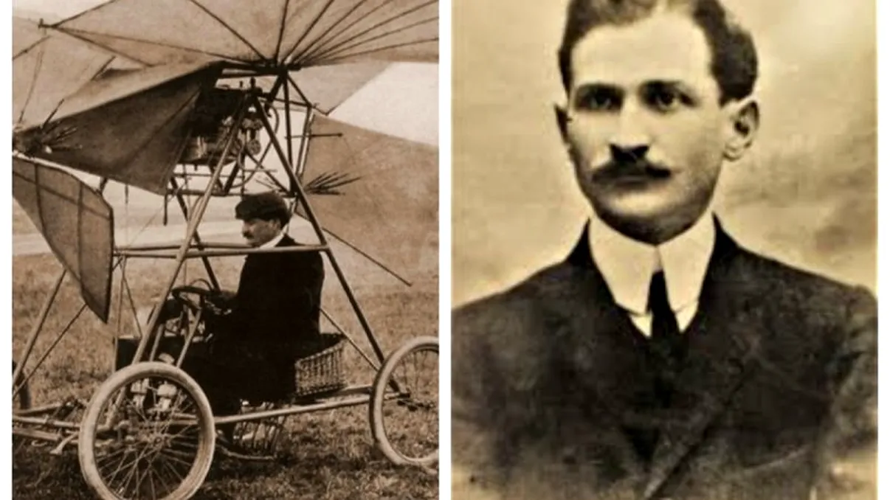The Romanian inventor Traian Vuia lived from 1872-1950 and helped to pave the way for modern aviation. He made a significant contribution in the development of the helicopter and focused on vertical take-off and landing. He is credited with inventing the first aircraft which took off under its own power. In 1906, Traian Vuia took off and flew for 12 meters with a self-propelled vehicle at a Paris airshow. It was an incredible success and a world premier that showed the potential of flying machines at the time. He also developed a powerful engine that could provide the lift necessary to take off and land vertically. This engine was used in many prototypes designed by Vuia himself and later adopted by other inventors of this period (the Wright Brothers included). Vuia's invention has been recognized worldwide and included in numerous exhibitions. He was awarded several impressive prizes for his tremendous achievements that changed aviation forever. His work paved the way for other great Romanians like Henri Coanda, an aerodynamics pioneer and another famous Romanian.
9. Aurel Vlaicu - engineer, inventor, and aviation pioneer
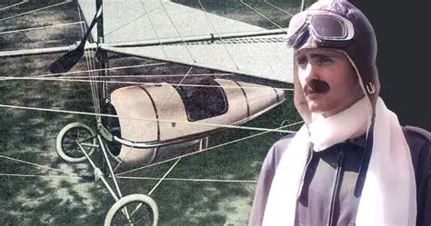Aurel Vlaicu, born in 1882 in Hunedoara County, was a talented engineer, inventor, and aviation pioneer. He was also the first Romanian to have ever flown a significant distance on the first attempt in an aircraft designed by him, Vlaicu I, without any modifications needed. In 1913, he attempted to cross the Romanian Carpathian Mountains from Bucharest, going over Brasov to prove the capabilities of his latest Vlaicu II model. A strong gust of wind destabilised him, and he died in the crash. He was considered a national hero and his Vlaicu III model was finalised by his collaborators. Vlaicu's legacy lives on through his famous monuments across Romania and by inspiring aeronautics students to reach high ambitions; this is why he'll always remain one of Romania's most famous figures. Though Aurel Vlaicu only lived to the age of 38, he managed to set world records for altitude, speed, and distance in aeronautics.
Conclusion
Many others didn’t make it onto our list of famous people, such as Alexandra Nechita, who, at just 10 years old, became the youngest artist to sign with the International Art Publishers. There was also Maia Morgenstern (the Most Famous Romanian Actress), Romanian Jazz Singer and Composer: Anca Parghel, Nicolae Iorga: Literary Critic and Romanian Culture Expert and many others. We sincerely hope we gave you an idea of the diversity of fields Romanians have contributed to on the world stage. If you're planning to visit, one of the best things to do in Romania is to ask locals who they think the most famous Romanians are.